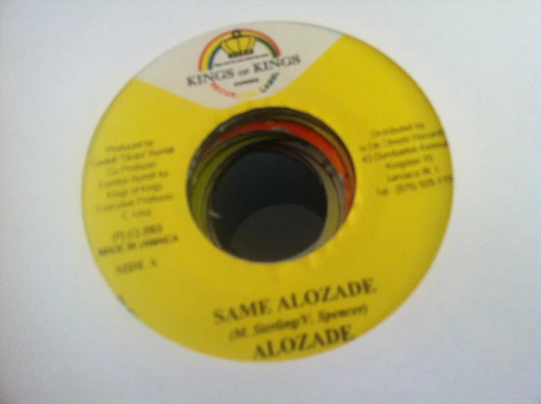
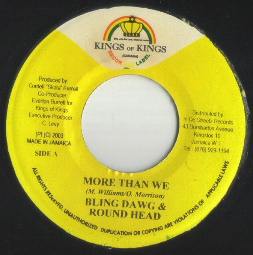
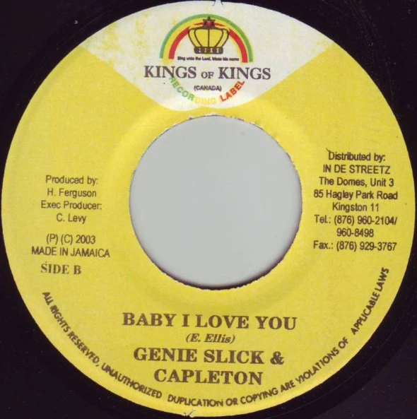
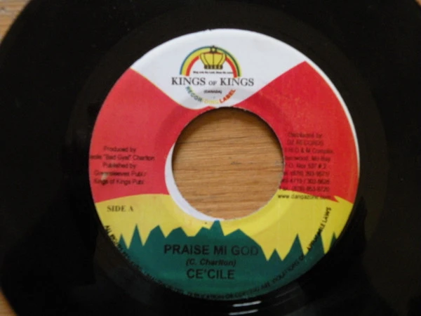
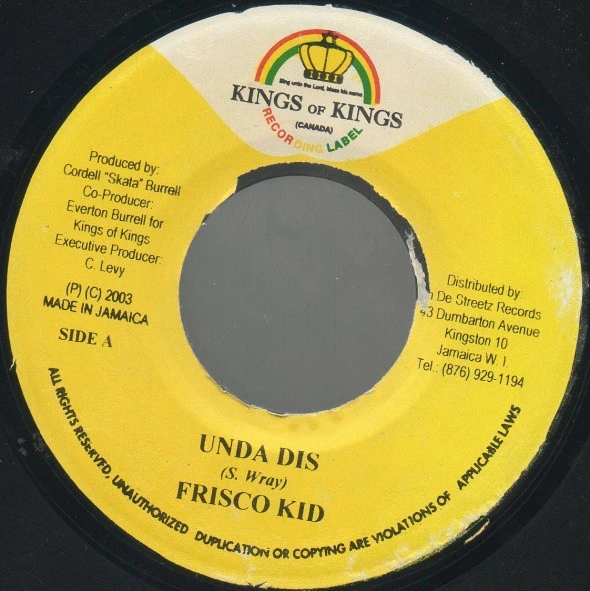
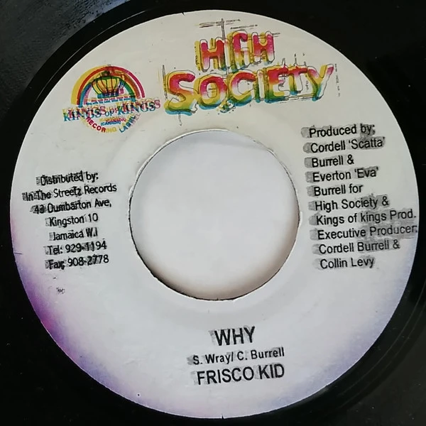
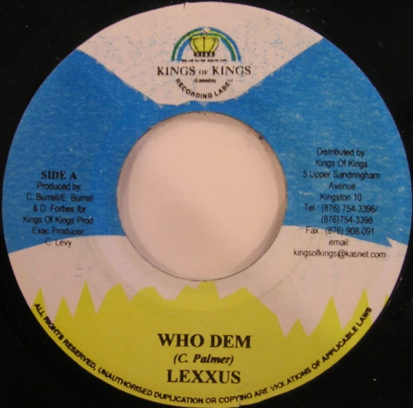
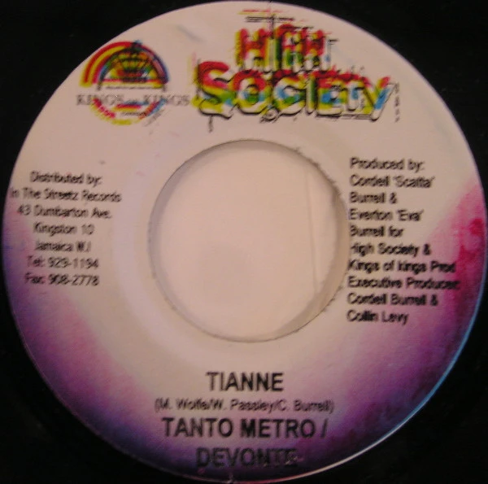
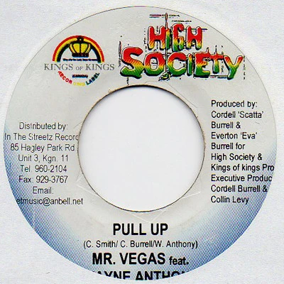

2003
Same Alozade / Hot Yu Hot
Alozade / Spotlight
Kings of Kings · 1 × Vinyl 7", 45 RPM
View release reference ↗THE RECORD LABEL
Roots in the music.
Stories in every groove.
ILEY DREAD / THE NEW ALBUM
A new chapter.
A higher vibration.
ALBUM STREET DATE
EARLY RELEASE / ITUNES STORE
Early release copies available at the iTunes Store starting November 27, 2026.
Discover the album ↗KINGS OF KINGS RECORDS / RIGHT NOW
THE MUSIC / SELECTED RELEASE ARTWORK
Original covers and campaign artwork from the Kings archive. Open a release to discover its story.
ONE ARTIST. MORE THAN ONE CHAPTER.
The original covers trace the names used across the recording campaigns: Colin Levy aka Iley Dread on Unite the People, Colin Levy on Lover’s Holiday, and Iley Chardavid on Unleashed.
The archive connects those recordings with the concert stage through the Montréal and Toronto showcase flyers.
Explore the artist’s archive ↗DIG INTO THE RELEASES
Browse documented Kings label credits. A release credit records a connection to that release; it does not imply an exclusive artist contract.
45 releases

Alozade / Spotlight
Kings of Kings · 1 × Vinyl 7", 45 RPM
View release reference ↗Assassin / Turbulence & Nena
Kings of Kings · 1 × Vinyl 7", 45 RPM
View release reference ↗Beenie Man / Chrisinti & Delly Ranks
Kings Of Kings; High Society · 1 × Vinyl 7", 45 RPM
View release reference ↗Beenie Man / Chrisinti & I Kay
Kings of Kings · 1 × Vinyl 7", 45 RPM
View release reference ↗Beenie Man / Hollow Point
Kings of Kings · 1 × Vinyl 7", 45 RPM
View release reference ↗Black Lion / Genie Slick & Capleton
Kings Of Kings · 1 × Vinyl 7", 45 RPM, Stereo
View release reference ↗
Bling Dawg & Round Head / General B
Kings of Kings · 1 × Vinyl 7"
View release reference ↗Bounty Killer / Jagwa
Kings Of Kings; High Society · 1 × Vinyl 7", 45 RPM
View release reference ↗Bounty Killer / Screechie Joe
Kings of Kings · 1 × Vinyl 7", 45 RPM
View release reference ↗Buju Banton / Pickney
Kings of Kings · 1 × Vinyl 7", 45 RPM
View release reference ↗Bushman
On The Corner; Kings of Kings · 1 × CD Album
View release reference ↗Bushman / Iley Dread Feat. Warrior King
Kings of Kings · 1 × Vinyl 7", 45 RPM
View release reference ↗
Capleton & Genie Slick
Kings of Kings · 1 × Vinyl 7", 45 RPM
View release reference ↗
Ce'cile / Kid Kurrupt
High Society; Kings Of Kings · 1 × Vinyl 7", 45 RPM
View release reference ↗Ce'cile / Mr. GG
Kings Of Kings · 1 × Vinyl 7", 45 RPM
View release reference ↗Ce'cile & Carl Henry / Lenny Sportshake
Kings of Kings; High Society · 1 × Vinyl 7", 45 RPM
View release reference ↗Elephant Man / Hollow Point
Kings Of Kings; High Society · 1 × Vinyl 7", 45 RPM
View release reference ↗Elephant Man / Jagwa
Kings of Kings · 1 × Vinyl 7", 45 RPM
View release reference ↗Elephant Man / Kiprich
Kings of Kings; High Society · 1 × Vinyl 7", 45 RPM
View release reference ↗

Frisco Kid / Hawkeye
Kings of Kings; High Society · 1 × Vinyl 7", 45 RPM
View release reference ↗General Degree / Merciless
Kings of Kings · 1 × Vinyl 7", 45 RPM
View release reference ↗Genie Slick Feat. Beenie Man
Kings of Kings · 1 × Vinyl 7", 45 RPM
View release reference ↗Iley Dread, Chrisinti & Norrisman / Iley Dread
Kings of Kings · 1 × Vinyl 7", 45 RPM
View release reference ↗Kiprich / Lady Saw / KC
Kings Of Kings · 1 × Vinyl 7", 45 RPM
View release reference ↗
Lexxus / Genie Slick & Stinga D
Kings Of Kings · 1 × Vinyl 7", 45 RPM
View release reference ↗Lexxus / Ward 21
Kings of Kings; High Society · 1 × Vinyl 7", 45 RPM
View release reference ↗Mad Cobra / General B / Lexxus
Kings of Kings; High Society · 1 × Vinyl 7", 45 RPM
View release reference ↗Merciless / Alozade / G Money
Kings of Kings · 1 × Vinyl 7", 45 RPM
View release reference ↗Predator / Captain Barkey / Patchy
Kings of Kings; High Society · 1 × Vinyl 7", 45 RPM
View release reference ↗Red Rat / Sizzla
Kings of Kings; High Society · 1 × Vinyl 7", 45 RPM
View release reference ↗Sean Paul
Kings Of Kings; High Society · 1 × Vinyl 7", 45 RPM
View release reference ↗Sizzla / Madd Anju
Kings Of Kings · 1 × Vinyl 7", 45 RPM
View release reference ↗T.O.K. / Desperado
Kings Of Kings; High Society · 1 × Vinyl 7", 45 RPM
View release reference ↗T.O.K. / Mega Banton
Kings Of Kings · 1 × Vinyl 7", 45 RPM
View release reference ↗
Tanto Metro & Devonte / Patchy
Kings of Kings · 1 × Vinyl 7", 45 RPM
View release reference ↗Vybz Kartel / Delly Ranks
Kings of Kings · 1 × Vinyl 7", 45 RPM, Misprint
View release reference ↗Vybz Kartel / Nymron
Kings Of Kings; High Society · 1 × Vinyl 7", 45 RPM
View release reference ↗Wayne Marshall
High Society; Kings of Kings · 1 × Vinyl 7", 45 RPM
View release reference ↗
Mr. Vegas Feat. Wayne Anthony
Kings Of Kings; High Society · 1 × Vinyl 7", 45 RPM
View release reference ↗No matching releases. Try another title or artist.
Release references are drawn from the supplied catalogue’s retrieved Discogs metadata. This is a selected discography, not a statement of current rights ownership or the complete label catalogue.